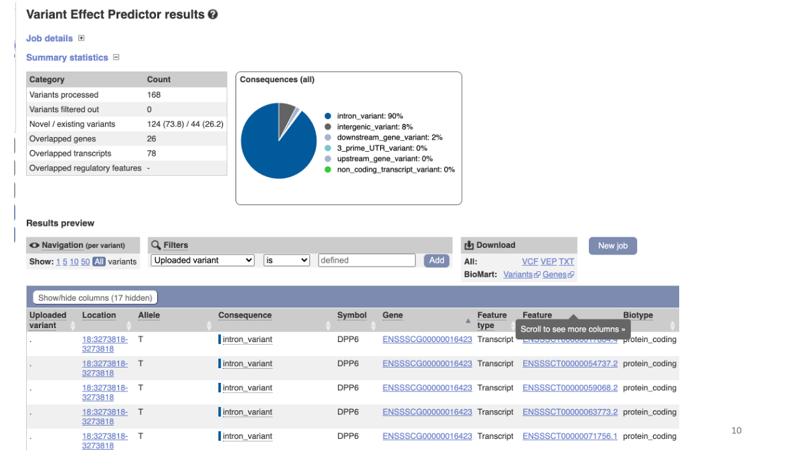
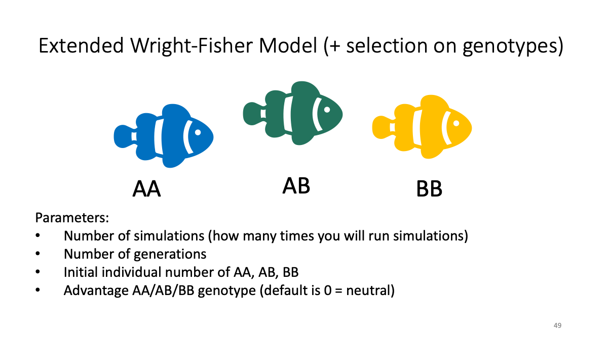

Bio326.misc
Marie Saitou
4/29/2021
Last updated: 2021-04-30
Checks: 7 0
Knit directory: Bio326/
This reproducible R Markdown analysis was created with workflowr (version 1.6.2). The Checks tab describes the reproducibility checks that were applied when the results were created. The Past versions tab lists the development history.
Great! Since the R Markdown file has been committed to the Git repository, you know the exact version of the code that produced these results.
Great job! The global environment was empty. Objects defined in the global environment can affect the analysis in your R Markdown file in unknown ways. For reproduciblity it’s best to always run the code in an empty environment.
The command set.seed(20210128) was run prior to running the code in the R Markdown file. Setting a seed ensures that any results that rely on randomness, e.g. subsampling or permutations, are reproducible.
Great job! Recording the operating system, R version, and package versions is critical for reproducibility.
Nice! There were no cached chunks for this analysis, so you can be confident that you successfully produced the results during this run.
Great job! Using relative paths to the files within your workflowr project makes it easier to run your code on other machines.
Great! You are using Git for version control. Tracking code development and connecting the code version to the results is critical for reproducibility.
The results in this page were generated with repository version f806cad. See the Past versions tab to see a history of the changes made to the R Markdown and HTML files.
Note that you need to be careful to ensure that all relevant files for the analysis have been committed to Git prior to generating the results (you can use wflow_publish or wflow_git_commit). workflowr only checks the R Markdown file, but you know if there are other scripts or data files that it depends on. Below is the status of the Git repository when the results were generated:
Ignored files:
Ignored: .DS_Store
Ignored: .RData
Ignored: .Rhistory
Untracked files:
Untracked: BIO326 URL genome annotatin computer lab_24_MAR_2021.docx
Untracked: BIO326-RNAseq.pptx
Untracked: BIO326-genome/
Untracked: BIO326.MS.10th_FEB_2021function.pptx
Untracked: BIO326_Introduction to sequence technology and protocols_3rd_FEB_2021.pdf
Untracked: BIO326_Introduction to sequence technology and protocols_3rd_FEB_2021.pptx
Untracked: BIO326_RNAseq_5th_FEB_2021.pptx
Untracked: BIO326_SQK-RAD004 DNA challenge.docx
Untracked: BIO326_visual_30_APR_2021.pptx
Untracked: Bio326.genome.html
Untracked: PCRdemo.R
Untracked: Pig_mutation_hist.csv
Untracked: RNAseq.Rplot.pdf
Untracked: Untitled.R
Untracked: analysis/popgen.simu.Rmd
Untracked: samples.xlsx
Untracked: vis.xlsx
Untracked: workflowR.bio326.R
Note that any generated files, e.g. HTML, png, CSS, etc., are not included in this status report because it is ok for generated content to have uncommitted changes.
These are the previous versions of the repository in which changes were made to the R Markdown (analysis/Bio326.misc.Rmd) and HTML (docs/Bio326.misc.html) files. If you’ve configured a remote Git repository (see ?wflow_git_remote), click on the hyperlinks in the table below to view the files as they were in that past version.
| File | Version | Author | Date | Message |
|---|---|---|---|---|
| html | f806cad | mariesaitou | 2021-04-30 | Build site. |
| Rmd | 1291054 | mariesaitou | 2021-04-30 | Add my first analysis |
| html | 638aff6 | mariesaitou | 2021-04-30 | Build site. |
| Rmd | e24d222 | mariesaitou | 2021-04-30 | Add my first analysis |
| html | fcc43b0 | mariesaitou | 2021-04-29 | Build site. |
| html | c2f93f6 | mariesaitou | 2021-04-29 | Build site. |
| Rmd | 0a45888 | mariesaitou | 2021-04-29 | Add my first analysis |
This workflow is based on Galaxy Training materials aimed for the two-hour courses in Bio326, NMBU 2021.
0. Goal of this workflow
Explore useful tips for genome analysis
We will learn: How to find relevant data sets from the public repository How to obtain gene function/evolution data (mostly for vertebrates) The overview of population genetics concept with R
1. Ensembl
1.1 Variant analysis within species with our data
Ensembl Variant Effect Predictor (VEP)
VEP determines the effect variants on genes, transcripts, and protein sequence, as well as regulatory regions. We will use sample B variant file to see where we observed variants in the functional genomics context.
VEP(Ensembl): https://www.ensembl.org/info/docs/tools/vep/index.html
Reference tutorial: https://www.youtube.com/watch?v=rSIG_OVzyLU&t=157s
Launch VEP web interface Specify reference Specify input data
The input data is available at:
https://github.com/mariesaitou/Bio326/blob/master/docs/assets/BIO326-misc/sampleB.chr18.QUAL800.vcf
Explore results 
1.2 Evolutionary analysis of tumore-suppressor genes between species
Go to https://www.ensembl.org/index.html
Reference tutorial: https://www.youtube.com/watch?v=bTBLg0bIi98&t=250s
2. Raw sequence data repositories
Find data sets from a paper
Firt, go to https://www.ncbi.nlm.nih.gov/
The same data is also available at ENA.
https://www.ebi.ac.uk/ena/browser/home
We can search data in ENA as well 
Study accession number and raw data.
We can search for the original paper with the accession number to read the study detail.
3. GTEx portal - Human Gene expression/splicing/eQTL database
Review of transcriptome analysis Reference video (StatQuest): https://www.youtube.com/watch?v=TTUrtCY2k-w&t=7s
GTEx Portal https://www.gtexportal.org/home/
Example: highly expressed genes in muscle Example: expression of CKM gene in various tissues
eQTL data sets: What is eQTL?

Example: CKMT1A gene expression and a variant at chr5:43504700 Splicing data sets
Example: CKMT1A splicing variants and their expression in various tissues
4. Rstudio (on Orion)
4.0 Accessible color design
Color-blind barrier-free color pallet - Color Universal Design Organization (CUDO), Kei Ito (University of Tokyo)
Use in R: http://www.cookbook-r.com/Graphs/Colors_(ggplot2)/
Simulator: https://www.color-blindness.com/coblis-color-blindness-simulator/
4.1 Simulating of evolution/Visualization with ggplot2
 The file is also available: as Rmarkdown and as html
Case studies:
The balance between selection and random drift
sBB<-0.02
Balancing selection (clasic case - sickle cell anemia against malaria parasites)
sAB<-0.02, sAA<-0.01
Admixture
n_AA <-50, n_AB<-0, n_BB<-50, sAA, sAB, sBB <-0
How about in larger populations?
(edit n_gen and n_AA, n_AB, n_BB. n_gen = sum of (n_AA, n_AB, n_BB))R + ggplot info: https://www.nmbu.no/course/STIN300
“Hands-on programming with R”
https://rstudio-education.github.io/hopr/
“R for data science”
ggplot2 Quickref